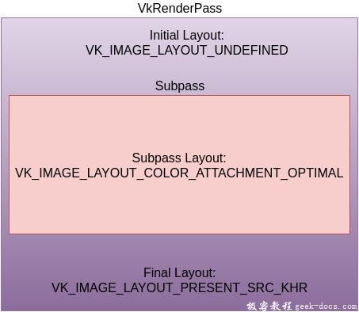
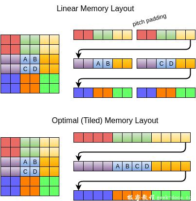

Vulkan 渲染通道，在我们完成管线的创建工作之前，我们需要告诉Vulkan渲染时候使用的framebuffer帧缓冲区附件相关信息。我们需要指定多少个颜色和深度缓冲区将会被使用，指定多少个采样器被用到及在整个渲染操作中相关的内容如何处理。所有的这些信息都被封装在一个叫做 render pass 的对象中。
设置
我们新添加一个createRenderPass函数，在initVulkan函数中确保createGraphicsPipeline调用之前，调用它。
void initVulkan() {
createInstance();
setupDebugCallback();
createSurface();
pickPhysicalDevice();
createLogicalDevice();
createSwapChain();
createImageViews();
createRenderPass();
createGraphicsPipeline();
}...void createRenderPass() {}
附件描述
在我们的例子中，我们将只有一个颜色缓冲区附件，它由交换链中的一个图像所表示。
void createRenderPass() {
VkAttachmentDescription colorAttachment = {};
colorAttachment.format = swapChainImageFormat;
colorAttachment.samples = VK_SAMPLE_COUNT_1_BIT;
}
format是颜色附件的格式，它应该与交换链中图像的格式相匹配，同时我们不会做任何多重采样的工作，所以采样器设置为1。
colorAttachment.loadOp = VK_ATTACHMENT_LOAD_OP_CLEAR;
colorAttachment.storeOp = VK_ATTACHMENT_STORE_OP_STORE;
loadOp和storeOp决定了渲染前和渲染后数据在对应附件的操作行为。对于 loadOp 我们有如下选项：
- VK_ATTACHMENT_LOAD_OP_LOAD: 保存已经存在于当前附件的内容
-
VK_ATTACHMENT_LOAD_OP_CLEAR: 起始阶段以一个常量清理附件内容
-
VK_ATTACHMENT_LOAD_OP_DONT_CARE: 存在的内容未定义，忽略它们
在绘制新的一帧内容之前，我们要做的是使用清理操作来清理帧缓冲区framebuffer为黑色。同时对于 storeOp 仅有两个选项：
- VK_ATTACHMENT_STORE_OP_STORE: 渲染的内容会存储在内存，并在之后进行读取操作
-
VK_ATTACHMENT_STORE_OP_DONT_CARE: 帧缓冲区的内容在渲染操作完毕后设置为undefined
我们要做的是渲染一个三角形在屏幕上，所以我们选择存储操作。
colorAttachment.stencilLoadOp = VK_ATTACHMENT_LOAD_OP_DONT_CARE;
colorAttachment.stencilStoreOp = VK_ATTACHMENT_STORE_OP_DONT_CARE;
loadOp和storeOp应用在颜色和深度数据，同时stencilLoadOp / stencilStoreOp应用在模版数据。我们的应用程序不会做任何模版缓冲区的操作，所以它的loading和storing无关紧要。
colorAttachment.initialLayout = VK_IMAGE_LAYOUT_UNDEFINED;
colorAttachment.finalLayout = VK_IMAGE_LAYOUT_PRESENT_SRC_KHR;
纹理和帧缓冲区在Vulkan中通常用VkImage 对象配以某种像素格式来代表。但是像素在内存中的布局可以基于预要对image图像进行的操作发生内存布局的变化。
一些常用的布局:
- VK_IMAGE_LAYOUT_COLOR_ATTACHMET_OPTIMAL: 图像作为颜色附件
-
VK_IMAGE_LAYOUT_PRESENT_SRC_KHR: 图像在交换链中被呈现
-
VK_IMAGE_LAYOUT_TRANSFER_DST_OPTIMAL: 图像作为目标，用于内存COPY操作
我们会深入讨论这些内容在纹理章节，现在最重要的是为需要转变的图像指定合适的layout布局进行操作。

initialLayout指定图像在开始进入渲染通道render pass前将要使用的布局结构。finalLayout指定当渲染通道结束自动变换时使用的布局。使用VK_IMAGE_LAYOUT_UNDEFINED设置initialLayout，意为不关心图像之前的布局。特殊值表明图像的内容不确定会被保留，但是这并不总要，因为无论如何我们都要清理它。我们希望图像渲染完毕后使用交换链进行呈现，这就解释了为什么finalLayout要设置为VK_IMAGE_LAYOUT_PRESENT_SRC_KHR。
如果没有搞清楚布局存在的意义，进一步解释layout请看如下图示:

一般意义上，我们理解CPU进行内存中的数据读写往往都是线性排序的linear memory layout，可以看到AB与CD作为来个连续的行来进行读取。但是在很多时候对于像素纹理数据的操作是非线性连续的，这种情景更多发生在GPU操作中，所以GPU硬件更多的支持基于(Tiled)平铺的或者成为最佳的内存布局结构，来提降低GPU处理数据的开销。
所以从CPU linear layout 内存数据 到 GPU optimal layout 显存数据的读写 往返之间存在数据存储格式的优化转变步骤。
子通道和附件引用
一个单独的渲染通道可以由多个子通道组成。子通道是渲染操作的一个序列。子通道作用与后续的渲染操作，并依赖之前渲染通道输出到帧缓冲区的内容。比如说后处理效果的序列通常每一步都依赖之前的操作。如果将这些渲染操作分组到一个渲染通道中，通过Vulkan将通道中的渲染操作进行重排序，可以节省内存从而获得更好的性能。对于我们要绘制的三角形，我们只需要一个子通道。
每个子通道引用一个或者多个之前使用结构体描述的附件。这些引用本身就是VkAttachmentReference结构体:
VkAttachmentReference colorAttachmentRef = {};
colorAttachmentRef.attachment = 0;
colorAttachmentRef.layout = VK_IMAGE_LAYOUT_COLOR_ATTACHMENT_OPTIMAL;
attachment附件参数通过附件描述符集合中的索引来持有。我们的集合是由一个VkAttachmentDesription组成的，所以它的索引为0。layout为附件指定子通道在持有引用时候的layout。当子通道开始的时候Vulkan会自动转变附件到这个layout。因为我们期望附件起到颜色缓冲区的作用，layout设置为VK_IMAGE_LAYOUT_ATTACHMENT_OPTIMAL会给我们最好的性能。
子通道使用VkSubpassDescription结构体描述:
VkSubpassDescription subpass = {};
subpass.pipelineBindPoint = VK_PIPELINE_BIND_POINT_GRAPHICS;
Vulkan在未来可能会支持关于compute subpasses的功能，所以在这里我们明确指定graphics subpass图形子通道。下一步为它指定颜色附件的引用:
subpass.colorAttachmentCount = 1;
subpass.pColorAttachments = &colorAttachmentRef;
附件在数组中的索引直接从片段着色器引用，其layout(location = 0) out vec4 outColor 指令!
可以被子通道引用的附件类型如下:
- pInputAttachments: 附件从着色器中读取
-
pResolveAttachments: 附件用于颜色附件的多重采样
-
pDepthStencilAttachment: 附件用于深度和模版数据
-
pPreserveAttachments: 附件不被子通道使用，但是数据被保存
渲染通道
现在附件和基本的子通道已经介绍过了，我们可以创建渲染通道了。首先新建一个类成员变量持有VkRenderPass对象，该变量在pipelineLayout上定义:
VkRenderPass renderPass;
VkPipelineLayout pipelineLayout;
渲染通道对象创建通过填充VkRenderPassCreateInfo结构体，并配合相关附件和子通道来完成。VkAttachmentReference对象引用附件数组。
VkRenderPassCreateInfo renderPassInfo = {};
renderPassInfo.sType = VK_STRUCTURE_TYPE_RENDER_PASS_CREATE_INFO;
renderPassInfo.attachmentCount = 1;
renderPassInfo.pAttachments = &colorAttachment;
renderPassInfo.subpassCount = 1;
renderPassInfo.pSubpasses = &subpass;if (vkCreateRenderPass(device, &renderPassInfo, nullptr, &renderPass) != VK_SUCCESS) {
throw std::runtime_error("failed to create render pass!");
}
就像pipeline layout一样，渲染通道在整个程序生命周期内都被使用，所以需要在退出阶段进行清理：
void cleanup() {
vkDestroyPipelineLayout(device, pipelineLayout, nullptr);
vkDestroyRenderPass(device, renderPass, nullptr);
...
}
这看起来很多工作量，但是在[下一章节]( /vulkan-integration-pipeline.html )我们会把所有的组件整合起来，创建最终的图形管线对象。